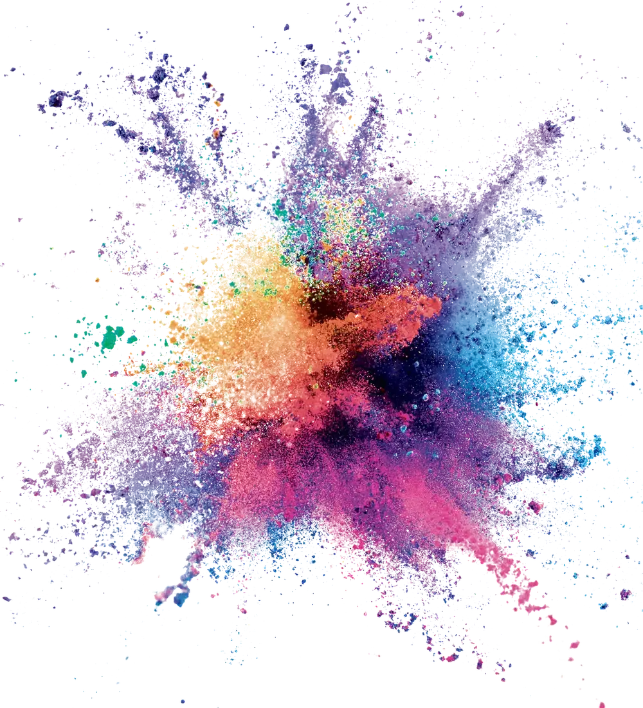
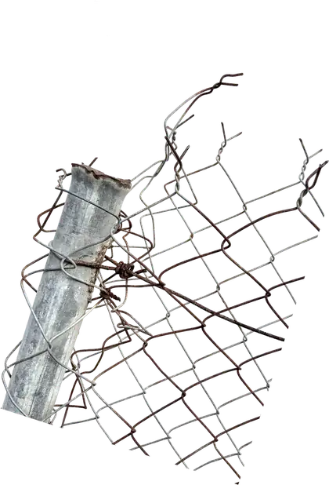

Parcours libre
Les fresques des éditions #1 et #2, à pied, à ton rythme, avec la carte. Gratuit.
Ouvrir la carte


Street Festival #3 · Fort-de-France, Martinique

du 25 janv.
au 4 févr.
2027
« À l'heure d'un certain fatalisme social, guerrier, climatique et numérique, un autre chemin est-il possible ? »
Texte de Xän pour le collectif Mada Paint · Un autre chemin · Another way · Lire le texte du thème
ARTMADA #2, du 1er au 11 février 2026 : les fresques, la jam et la block party à Fort-de-France.
La vidéo se charge depuis YouTube quand tu cliques. La voir sur YouTube · Temps forts 2026 · Temps forts 2024
On peut aller voir les fresques toute l'année, à pied, gratuitement. Ouvrir la carte
Au total depuis la création du festival (éditions #1 en 2024 et #2 en 2026).
Les fresques des éditions #1 et #2, à pied, à ton rythme, avec la carte. Gratuit.
Ouvrir la carte2 heures avec un membre du collectif, pour un groupe jusqu'à 25 personnes : écoles, associations, entreprises.
Demander une dateLe samedi, de 10h à 12h, 8 places. Initiation sur un vrai mur, puis ton œuvre sur panneau. Avec Doudou Style, à l'Urban Studio, Village de la Poterie, Les Trois-Îlets.
Réserver
75 bénévoles ont fait vivre ARTMADA #2. Conduire les artistes, accueillir le public, aider sur les murs : même quelques heures comptent.
Je deviens bénévoleSans eux, le festival n'aurait pas pu exister · Devenir partenaire